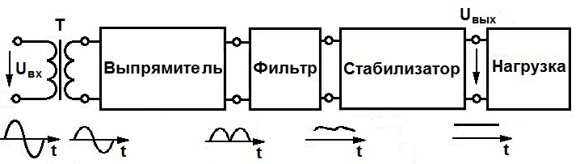
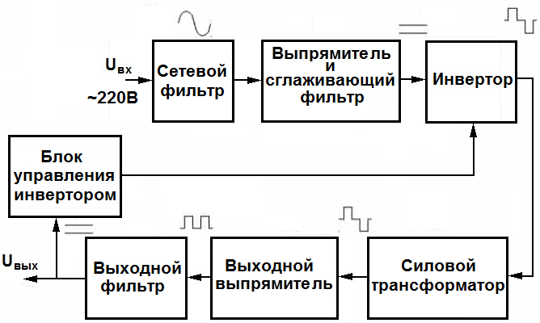

Источники вторичного питания
Вторичные источники подключаются к первичным и преобразуют получаемую электроэнергию в выходное напряжение с требуемыми параметрами частоты, пульсации и т. д.
Основные функции вторичных источников:
- обеспечение передачи требуемой мощности с наименьшими потерями;
- преобразование формы напряжения (переменного напряжения в постоянное, изменение частоты, формирование импульсов;
- преобразование значение напряжения (повышение или понижение его величины, формирование нескольких величин для разных цепей);
- стабилизация напряжения (его показатели на выходе должны находиться в заданном диапазоне);
- защита (чтобы напряжение, превысившее допустимые значения вследствие неисправности, не вывело из строя аппаратуру или сам ИП);
- гальваническое разделение цепей.
Существует два основных типа источников вторичного питания (ИВП) – трансформаторный и импульсный.
Трансформаторный блок питания.
Трансформаторный, или линейный ИВП – классический блок питания. Регулировка выходного напряжения происходит в нем непрерывно, то есть линейно.
В его конструкцию последовательно входят:
- трансформатор - изменяет напряжение до нужной величины;
- выпрямитель - преобразует переменное напряжение в постоянное;
- фильтр - сглаживает пульсацию (колебания) в выпрямленном напряжении;
- стабилизатор - поддерживает постоянное выходное напряжение .

Также схема может включать защиту от короткого замыкания, фильтр высокочастотных помех и др.
Достоинства трансформаторных ИВП:
- простота конструкции;
- гальваническая развязка от сети;
- надежность в эксплуатации.
Недостатки:
- большие габариты и вес, которые прямо пропорциональны его мощности;
- относительно низкий КПД.
В бытовой технике линейные ИП малой мощности используются для питания плат управления стиральных машин, микроволновок, отопительных котлов.
Импульсный ИВП.
Импульсный блок питания устроен принципиально иначе и имеет более сложную конструкцию.
Он содержит:
- выпрямитель (входное напряжение сначала выпрямляется – преобразуется из переменного в постоянное);
- блок широтно-импульсной модуляции – ШИМ (преобразует постоянное напряжение в импульсы определенной частоты и скважности);
- частотный фильтр (в блоках без гальванической развязки);
- трансформатор (в блоках с гальванической развязкой от сети).

В импульсных источниках вторичного напряжения стабилизация реализуется посредством обратной связи, что позволяет поддерживать выходное напряжение на заданном уровне независимо от скачков входных параметров.
Например, в блоках с гальванической развязкой в зависимости от величины выходного сигнала изменяется скважность (отношение частоты следования импульсов к их длительности) на выходе ШИМ-контроллера.
Достоинства импульсных источников питания:
- малый вес и небольшие размеры;
- высокий КПД (до 98%);
- широкий диапазон допустимого входного напряжения;
- встроенная защита от короткого замыкания и других форс-мажоров;
- невысокая цена;
- по надежности сравнимы с трансформаторными ИП.
Недостатки:
- являются источниками высокочастотных помех, которые нельзя полностью устранить;
- имеют ограничение по минимальной мощности нагрузки: не включаются, если она ниже требуемой.
Импульсные источники – это зарядки мобильных телефонов, блоки питания компьютеров, оргтехники, бытовой электроники.